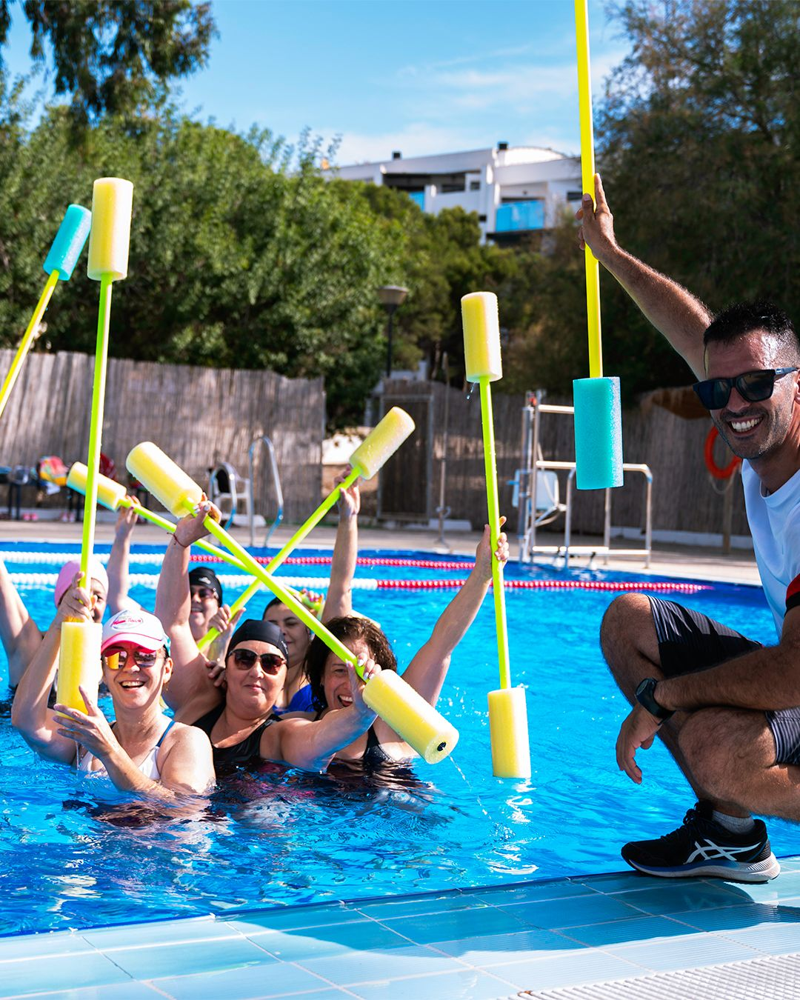
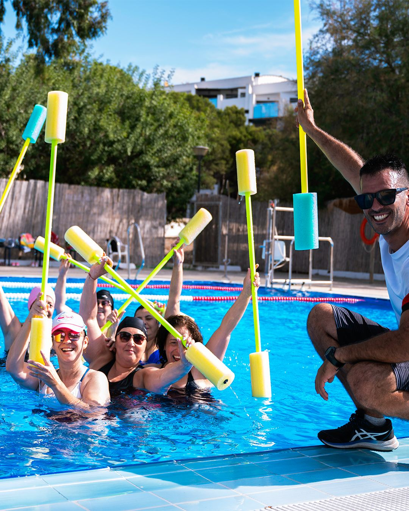

Soy Gastón Martín Iriart, graduado en Ciencias de la Actividad
Física y el Deporte y Monitor de Natación por la Real
Federación Española de Natación (RFEN). Llevo más de 10 años
dedicado con pasión a la enseñanza de la natación, formando a
niños desde sus primeros pasos en el agua hasta adultos que
buscan mejorar su técnica, salud o confianza en el medio
acuático.
Actualmente imparto clases en Aguadulce de Natación y Aquagym,
ofreciendo un enfoque personalizado, seguro y adaptado a todas
las edades. Me defino por un trato cercano, una comunicación
constante con mis alumnos y la firme convicción de que
aprender debe ser también divertido.
Además de mi formación universitaria, me he especializado como
Técnico Superior en Actividades Físicas y Animación Deportiva,
Socorrismo, y programas dirigidos a la tercera edad.
Nuestras instalaciones están ubicadas en:
Desliza
 


El Aquagym es una actividad física acuática que combina ejercicios de gimnasia, tonificación y movilidad realizados dentro del agua, especialmente diseñada para mejorar la salud, la forma física y el bienestar general.
Gracias a la resistencia natural del agua y su bajo impacto sobre las articulaciones, el Aquagym es ideal para personas de todas las edades y condiciones físicas, incluidas personas mayores, embarazadas o quienes se están recuperando de lesiones.
En nuestras clases en Aguadulce, trabajamos en un ambiente ameno y motivador, donde el ejercicio se convierte en una experiencia de salud y disfrute.